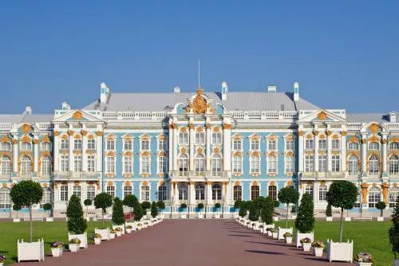

Екатерининский дворец

История дворца тесно переплелась с историей российской государственности. Отвоёванные во время Северной войны земли будущего Царского Села в июне 1710 года Пётр I преподнёс своей супруге, Марте Скавронской, которая в дальнейшем стала императрицей Екатериной I. Через семь лет архитектор Фридрих Браунштейн возвёл здесь для неё первый скромный дворец — «каменные палаты на 16 светлиц».
После смерти Екатерины Царское Село стало любимой резиденцией дочери Петра, императрицы Елизаветы. Скромное жилище матери уже не соответствовало её вкусам и амбициям могущественной державы. В 1750-х годах палаты были радикально перестроены по проекту придворного архитектора Франческо Бартоломео Растрелли. Они превратились в грандиозный дворец. Работы были масштабными: старые стены наращивали, к центральному корпусу пристраивали новые флигеля, украшали фасады и создавали знаменитые интерьеры. Именно при Елизавете дворец обрёл свой нарядный, вычурный облик в стиле барокко. В этих стенах кипела светская жизнь, давали грандиозные балы, а императрица поражала гостей роскошью и обилием нарядов.
При Екатерине II дворец изменился и стал соответствовать идеям эпохи Просвещения. Взойдя на престол, императрица, считавшая барокко Растрелли устаревшим, пригласила архитектора-шотландца Чарльза Камерона. Он, тонкий знаток античности, переделал личные апартаменты императрицы, создав анфиладу изысканных покоев в духе лаконичного классицизма. В их числе Арабесковый и Лионский залы, Парадная и Китайская голубые гостиные.
На протяжении XIX столетия дворец оставался официальной летней резиденцией царской семьи. Последние крупные интерьерные изменения связаны с именем архитектора Ипполита Монигетти, который оформил Парадную мраморную лестницу и апартаменты для императора Александра II.
После 1917 года дворец национализировали и сделали музеем. Во время Великой Отечественной войны Пушкин был оккупирован, а дворец использовался как казарма и госпиталь. При отступлении в 1944-м он был подожжён и практически превращён в руины. В 1947-м началась реставрация, которая продолжается по сей день. По чертежам, фотографиям и сохранившимся фрагментам тысячи мастеров возрождали дворец. Восстановление Янтарной комнаты завершилось к 300-летию Санкт-Петербурга.
← Вернуться на главную